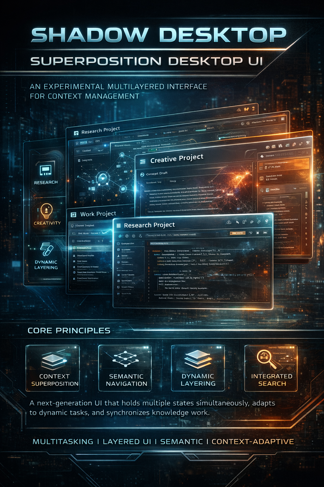

Introduction
Shadow Desktop / Superposition Desktop UI is an experimental interface that combines multilayered perception of the digital environment with context management. This document describes the key principles, architecture, and implementation features. In this presentation, we will examine each of these components in detail to understand how they work together to create a unique user experience.
Core Principles
Superposition of contexts: the ability to hold multiple interface states simultaneously. This means the user can work on different tasks or projects without losing their state and without fully switching between them. It increases efficiency and reduces switching time, which is especially important for corporate users and professionals.Business rationale: reducing task‑switching time directly increases employee productivity, improving overall business efficiency and lowering operational costs.
Layer transparency: each layer is visible and manageable but does not interfere with others. This allows simultaneous visibility of multiple levels of information while maintaining clarity and ease of interaction. It improves perception and reduces cognitive load.Business rationale: lowering cognitive load reduces errors and improves decision quality, critical for corporate clients and professionals.
Minimalism of interaction: the user works with clean structures without unnecessary visual noise. This reduces attention strain and helps focus on the essentials, increasing productivity and reducing fatigue during long sessions.Business rationale: better concentration and reduced fatigue lead to higher productivity and fewer errors.
Adaptivity: the interface adjusts to tasks and user dynamics, changing its behavior and appearance depending on context and needs. This creates a personalized experience, improving satisfaction and reducing training time.
Business rationale: personalization reduces onboarding time for new employees and lowers training and support costs.
Architecture
Shadow Desktop: the base layer providing stability and control. It serves as the foundation for all other interface components, ensuring reliability and predictability, critical for business applications.Business rationale: system stability reduces downtime and data loss risks, important for corporate clients.
Superposition UI: a layer enabling switching between multiple contexts. It functions like a multilayered screen, each layer representing a separate work context. This supports parallel work and increases flexibility.Business rationale: interface flexibility allows adaptation to diverse business processes, increasing versatility and value.
Context nodes: entry points into different states (work, research, creativity). They enable quick switching and orientation in complex task structures, saving time and reducing errors.Business rationale: faster navigation and fewer errors improve overall efficiency and result quality.
Interaction protocol: a unified language for managing layers and their connections. This ensures effective data exchange and synchronization between components, maintaining integrity and consistency of the user experience.
Business rationale: standardized interaction simplifies integration of new features and reduces support costs.
Implementation Features
Multilayer visualization: each layer is represented as a semi‑transparent plane, allowing simultaneous visibility and interaction with multiple levels of information. This improves overview and comprehension of complex data, important for analysts and researchers.Business rationale: better data perception supports more accurate analysis and decision‑making.
Flexible routing: users can move between contexts without losing data, maintaining integrity and continuity of work. This reduces information loss risk and increases reliability.Business rationale: preserving data and workflow continuity reduces risks and builds user trust.
Semantic navigation: the interface is built around ideas rather than files or applications. This changes the approach to work organization, making it more intuitive and result‑oriented, accelerating decision‑making.Business rationale: intuitive navigation reduces training time and speeds up work, saving company resources.
Search integration: quick access to information through built‑in search mechanisms allows finding necessary data without interrupting workflow. This increases efficiency and reduces time spent searching.
Business rationale: faster access to information boosts productivity and reduces employee time costs.
User Experience
Unified space: all tasks are performed in one environment, simplifying management and reducing app switching. This decreases fragmentation and improves focus.Business rationale: reducing fragmentation increases efficiency and lowers error rates.
Task superposition: the ability to keep multiple processes active simultaneously, increasing productivity and flexibility. This is especially important for professionals handling multiple projects.Business rationale: greater flexibility improves project quality and speed.
Transparent control: users see which contexts are active and can manage them directly, switching and configuring as needed. This increases control and reduces errors.Business rationale: better control reduces risks and improves work quality.
Minimal distractions: the interface hides secondary elements, leaving only semantic nodes, helping focus on the essentials. This improves work quality and reduces fatigue.
Business rationale: fewer distractions increase productivity and quality.
Applications
Research work: simultaneous analysis of multiple sources and datasets, improving research quality and speeding analysis.Business rationale: better research supports innovation and competitiveness.
Creative projects: parallel work with different ideas and concepts, fostering innovation and product development.Business rationale: supporting innovation drives business growth and market expansion.
Knowledge management: systematization and quick access to information, improving corporate memory and accelerating employee learning.Business rationale: effective knowledge management reduces training costs and increases adaptability.
Multitasking scenarios: efficient distribution of attention and resources across tasks, increasing productivity and reducing stress.
Business rationale: higher productivity lowers operational costs and improves workplace atmosphere.
Business Rationale for Microsoft Windows
Key role of Microsoft Copilot as the core: Microsoft Copilot acts as the conductor of the entire system, providing intelligent context management, automation, and personalization. Without Copilot integration, the Shadow Desktop concept loses meaning, as Copilot links interface layers, helps users manage multiple tasks, and ensures adaptivity.Business rationale: Copilot integration increases solution value by embedding AI, improving user experience, reducing workload, and opening new automation opportunities.
TADA ultra‑compression data format: TADA is an innovative user profile storage format that provides ultra‑compression without encryption, significantly boosting system potential through faster loading, resource savings, and scalability.Business rationale: TADA reduces storage and network requirements, speeds up performance, and eases scaling, critical for corporate and cloud solutions.
Productivity gains: context superposition and multitasking reduce switching time and increase efficiency, critical for corporate clients and professionals.
Improved user experience: minimalism and adaptivity reduce cognitive load, making work more comfortable, increasing satisfaction, and lowering support requests.
Innovative positioning: introducing advanced interface solutions strengthens Microsoft’s image as a leader in user technology and innovation.
Lower training and support costs: intuitive semantic navigation and transparent context management simplify onboarding and reduce training needs.
Flexibility and scalability: multilayer visualization and interaction protocol architecture allow easy integration of new features and adaptation to diverse scenarios.
Business rationale: cloud scalability ensures access to Shadow Desktop from any device and environment, expanding remote work and flexible business models.
Conclusion
Shadow Desktop / Superposition Desktop UI is a step toward next‑generation interfaces, where context management becomes as natural as breathing. It is a small step, but it opens the path to deeper transformation of the digital environment, making user work more productive, flexible, and intuitive.